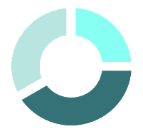

Testing
Testing
Test
Create Research
Research Capability
Select capability...
Traditional Analysis
Ecosystem Research
Narrative Research
Comparative Research
Scenario Research
Intelligence Research
Custom Research
Choose capability first...
Additional Context
0
/ 1000
Research Modifiers
Scope
Assets
Sector
Market
Depth
High-Level
Focused
Comprehensive
Rigor
Essential
Detailed
Exhaustive
Perspective
Investment
Educational
Technical
Generate Research
Generating Research...
Estimated time:
5:00
−
×
Document
Download PDF
Close